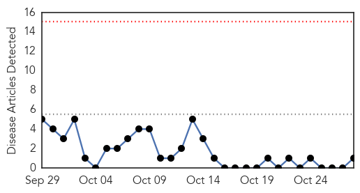
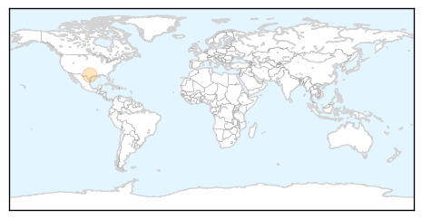

West Nile Virus
30-Day Web Trend
0 alerts, 0 warnings

30-Day Twitter Trend
6 alerts, 0 warnings

Article Locations
Article Confidences

Top Articles:
Top Tweets:
-
No tweets found for Oct 28, 2015
Dengue Fever
30-Day Web Trend
0 alerts, 0 warnings

30-Day Twitter Trend
2 alerts, 3 warnings

Article Locations

Article Confidences

Top Articles:
- 0.931
- Awareness Measures Intensify as Dengue Cases Shoot Up
- 0.924
- Hard hit: Dengue mosquitoes continue to bite
- 0.783
- WHO voices concern over health ramifications of Afghanistan, Pakistan quake --China Economic Net
- 0.749
- Climate deal more important for your health than you realise: WHO
- 0.727
- 'Fake survey report escalated dengue fever in Rawalpindi'
- 0.706
- Climate deal more important for your health than you realise-WHO
- 0.696
- UN ramps up to assist those in Afghanistan and Pakistan affected by earthquake
- 0.666
- Tamil Nadu reviews spread of dengue, seeks public help
- 0.650
- Climate deal more important for your health than you realise-WHO
Top Tweets:
-
No tweets found for Oct 28, 2015